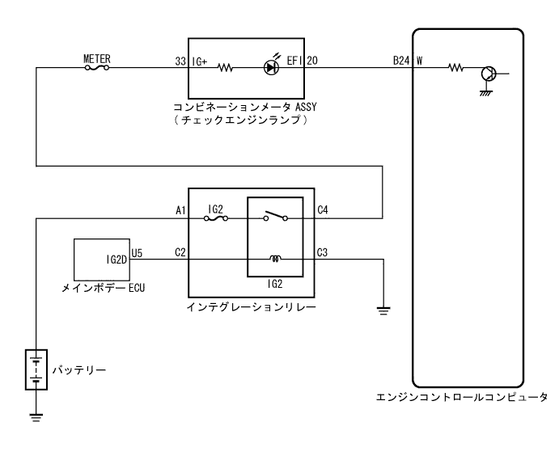
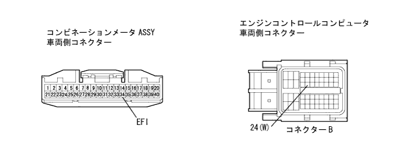

EFI System (2GR-FE) Check Engine Warning Light Circuit |

| Step 1 | Check that Check Engine Warning Light Comes On |
Perform troubleshooting according to the table below.
| Check engine warning light | Condition | Proceed to |
|---|---|---|
| Remains on | IG ON | A |
| Remains off | IG ON | B |
| Comes on -> goes off | IG ON | C |
|
| ||||
|
| ||||
| A | |
| Step 2 | Read DTC |
Connect SST (TaSCAN) to DLC3.
Read the DTCs of the EFI system following the SST (TaSCAN) screen display. (see)
| Result | Proceed to |
|---|---|
| No DTC is output | A |
| DTCs are output | B |
|
| ||||
| A | |
| Step 3 | Inspect Wire Harness and Connector (Short Circuit Inspection) |
Disconnect connector B of the engine control computer.
Turn IG ON.
Check that the check engine warning light in the combination meter assembly does not come on.
| Result | Proceed to |
|---|---|
| Check engine warning light comes on | A |
| Check engine warning light does not come on | B |
|
| ||||
| A | |
| Step 4 | Inspect Wire Harness and Connector (Engine Control Computer - Combination Meter Assembly) |
for reference.
Disconnect the combination meter assembly connector.
Disconnect connector B of the engine control computer.
Using SST (Toyota electrical tester), measure the resistance between the terminals. (For the terminals of ECU,)
| Tester Connection (Terminal Symbol) | Condition | Standard |
|---|---|---|
| Between B24 (W) and 20 (EFI) - Body ground | Always | 10k Ω or more |
|
| ||||
| OK | ||
| ||
| Step 5 | Inspect Engine Starting |
Check that the engine starts.
| Result | Proceed to |
|---|---|
| Engine starts | A |
| Engine does not start | B |
|
| ||||
| A | ||
| ||